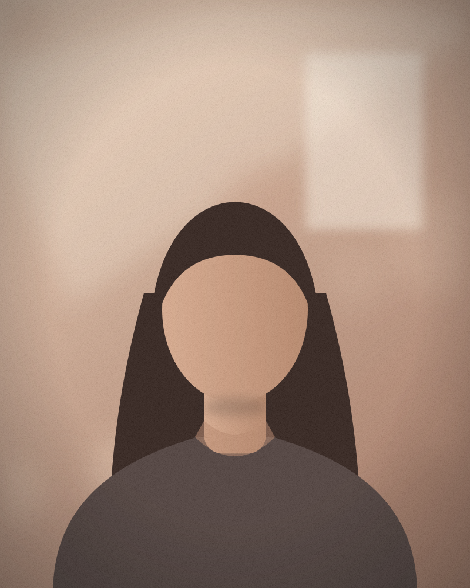
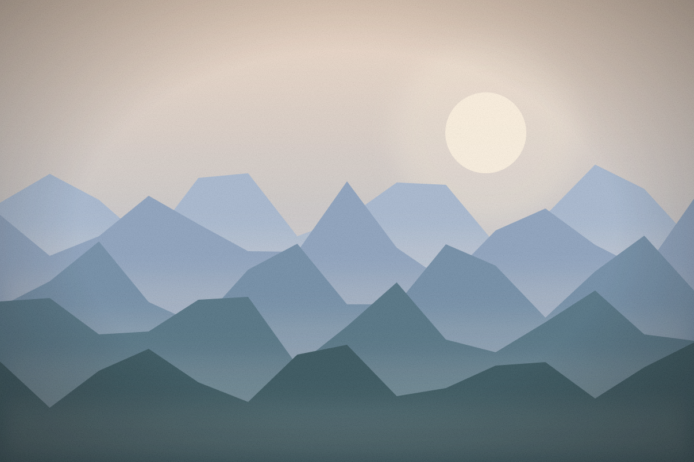

Sesiones personales
Retratos de una persona o de pareja, con luz natural. Sin prisa, para que no sientas que estás posando.


Imágenes de demostración
Retratos de una persona o de pareja, con luz natural. Sin prisa, para que no sientas que estás posando.
Cumpleaños, bodas, reuniones de familia. La cámara se mueve sin estorbar y se queda con lo que pasa, no con lo que se arma para la foto.
Fotos de producto y del equipo para la web y las redes de un negocio pequeño.
Parque, playa o calle. El lugar y la hora se eligen según de dónde venga la luz.
Daniela es un personaje inventado para este proyecto. Imagínala con una cámara prestada, sus primeras fotos hechas en el balcón de su casa y una manía: no usa flash si hay una ventana cerca.
Conversa un rato antes de sacar la cámara. Después entrega pocas fotos, elegidas una por una.
Contenido de demostración: la persona y su historia son ficticias.
Cuéntame qué necesitas: una sesión, un evento o fotos para tu negocio.